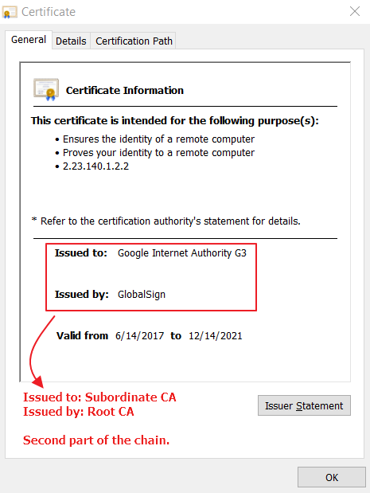
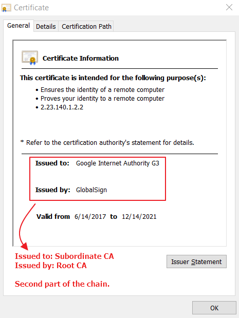
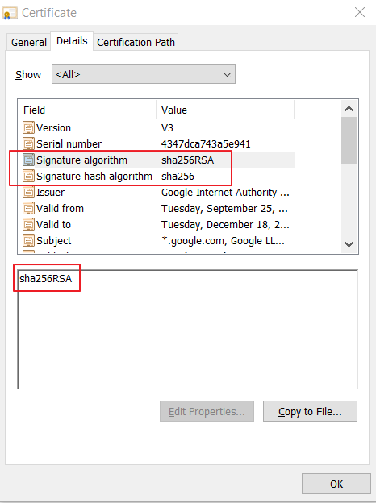

Certificates and Public Key Infrastructure
Introduction to PKI or Public Key Infrastructure in a Simpler and a more practical standpoint.
-
Trust
Let's first take a look at what is the meaning of "Trust".
Below is an example:
Lets say that A (Alice) would like to do a secure communication for the very first time with B (Bob). Alice has never met with Bob in her life and doesn't know who he is and neither does Bob know Alice. But Alice knows C (Charlie). Fortunately, B Bob also knows Charlie.
Let's assume Alice "trusts" Charlie and Bob also "trusts" Charlie.
Now, Alice asks Charlie if Bob is trustworthy. Charlie replies "Ya, I know him, he checks out, you can trust him".
This same thing happens with Bob.
Bob asks Charlie if Alice is trustworthy. Charlie replies "Ya, I know her, she checks out, you can trust her".
Great! Now that a Alice and Bob both have confirmation from a trusted party, viz, Charlie, they can now trust each other.
A ----------DOESNT TRUST----------------B
AIM :- A ----------- TRUSTS -------------B
Since,
A -------------- TRUSTS ----------------C
B ---------------TRUSTS ----------------C
so
A -------------- TRUSTS ----------------B
This is a simple analogy of how a "trust relationship" is established.
Lets extrapolate the above example to include a few more technical terms.
-
Trusted Party and Certificates
Charlie is the certificate authority or the "Trusted Party". Charlie generates certificates(analogously ID cards) for Alice and Bob. The certificate has the information of Alice (such as Name, Date of Birth, Expiry of the card etc.) and it is also signed by Charlie. Simiarly, even Bob will recieve a certificate of his own signed by Charlie. Now, this step is done before the actual communication exchange between the Alice and Bob. Charlie also has his own certificate which is also given to both Alice and Bob.
Now, armed with the certificates, both Alice and Bob can begin their communication.
Alice sends her certificate to Bob, and Bob checks the signature of Charlie. Once, the signature verification is done, Bob now trusts Alice. Similarly, Bob will also send Alice his certificate. Alice will check the signature of Charlie. Once, the signature verification is done, Alice will now trust Bob.
This is how typically authentication of completely unknown parties occur over the Internet.
To make the job of Charlie or the CA (Certificate Authority) simpler of distributing certificates to the whole world, there are subordinate CA also that sort of report to the main CA or "Root" CA.
I'd like to elaboarate a little bit more on the signatures mentioned earlier. These signatures are called Digital Signatures. They use asymetric cryptography that generate two keys or a key pair. One key is called Private key and the other is called a Public Key. As the names suggest, private key is a key that is kept secret and a public key is the key that is public to everyone.
Now, lets explore how Charlie or a CA ensures who Alice and Bob really are and how he creates the certificate and the signature. Lets move away from the Alice, Bob and Charlie example and extrapolate this to sort of a real world scenario.
Google wants a certificate from a Trusted Party for www.google.com.
- Google first goes to the CA and then requests for a certificate from them.
- The CA then asks Google for all the details (domain name: www.google.com, Organization Unit: Google Inc. etc.). The CA does a background check and ensures that the information about google is correct and valid.
- The CA then computes a hash of all the information provided by Google.
- The CA then encrypts or "signs" this hash with its own private key. Why is this a "sign"? because since it is a private key, only the CA can encrypt that hash. This encrypted hash, with the rest of the data pertaining to Google that it provided to the CA in plaintext and the public key constitute the certificate. This certificate also has valuable information or "General Information" such as Expiry date, Issued to and Issued By details. Let's just quickly see a mock certificate for our example:
Certificate
General:
Issued to: Alice
Issued by: Charlie
Valid from 07/2018 to 07/2022
Details:
DOB: 12/23/2000
Address: 1234, Random Street
Etc.
Charlie's Public Key
Signed(Hash(Alice's information))

 This above process is done for everyone who asks for a certificate. This is analogous to the creation of an ID card (such as a driver's license) by a trusted government agency.
This above process is done for everyone who asks for a certificate. This is analogous to the creation of an ID card (such as a driver's license) by a trusted government agency.
-
Trusted Chain or Chain of Trust
Before we go on to explain how your web browser will negotiate a "trust relationship" with the web server www.google.com using certificates, let me quickly touch upon a topic of the "Trusted Chain" or "Chain of trust". If you remember I mentioned about the Subordinate CAs existing. These subordinate CA's are child CA's that a Root CA have given privileges to also distribute certificates. The hierarchy is as seen below:
A Root CA, the entity that is at the top of chain will have the "Issued by" and "Issued to" as the same, i.e., itself. The Subordinate CA's will have the "Issued by" field populated by the Root CA. All the other certificates that users request will now have the Issued by field as this Subordinate CA.


 

 Now this is what is a chain of trust. Every server will validate this chain, if the chain is broken or if there is any missing entity, the authentication of that certificate will fail.
Now this is what is a chain of trust. Every server will validate this chain, if the chain is broken or if there is any missing entity, the authentication of that certificate will fail.
-
How do I know the Signature that I am using in my certificate?
-
Go to the Details Tab.

- Find and click on Fields: "Signature algorithm" or "Signature has algorithm" 
-
Go to the Details Tab.
-
Mutual Authentication using Certifications
Now, lets explore what happens if your web browser talks to www.google.com.
- Your web browser will first present its certificate with the chain to the web server google.com.
- The web server validates the chain and verifies the signature. After the verification, google.com now trusts your web browser and then www.google.com's web server then presents in own certificate.
- The web browser then validates the chain and verifies the signature just the web server did. If everything checks out then web browser will now trust www.google.com.
-
Definitions
Here are a few formal definitions:
CA (Certificate Authority) - A Certificate Authority is an authority that issues public key certificates and provides identification to the bearer. Subordinate CA (Certificate Authority) - A Subordinate CA is a certificate authority (CA) that is at a level beneath the root CA.
Certificates - A digital certificate provides authenticity to a users or clients identity. A digital certificate contains a number of details relating to the client such as address, DN, email address etc. Each digital certificate is issued (and signed) by a CA (Certificate Authority) and is only valid for a specific period of time.
Key Pairs - A key pair consists of a public and private key. Any data that is encrypted with the public key can be decrypted with the private key and vice-versa. The public key can be provided to anyone who requests it and is typically formed as part of the public certificate. The private key (as the name suggests) is keep private and not shared.
Digital Signatures - A digital signature is generated by the hashing of a digital certificate. The hash is then encrypted using the CA`s private key. This encrypted hashcode string is then appended to the public certificate as a digital signature.
As only the CA`s public key can decrypt the digital signature, authenticity is provided to the users public certificate.
-
Good Links
Recommended viewing for further strengthening above concepts
https://www.youtube.com/watch?v=i-rtxrEz_E8
This above video is an excellent illustration of the need for the digital certificates and how asymetric encryption works. It's only about 3 minutes long. It also explains some of the concepts mentioned above.
https://www.youtube.com/watch?v=q9vu6_2r0o4
This video is an 18 minute video, but the explanation of the concepts is amazing since it includes the encryption and why different encryption schemes are needed and how they came about. This is definitely a must watch.
https://www.fir3net.com/Security/Concepts-and-Terminology/pki-chain-of-trust.html